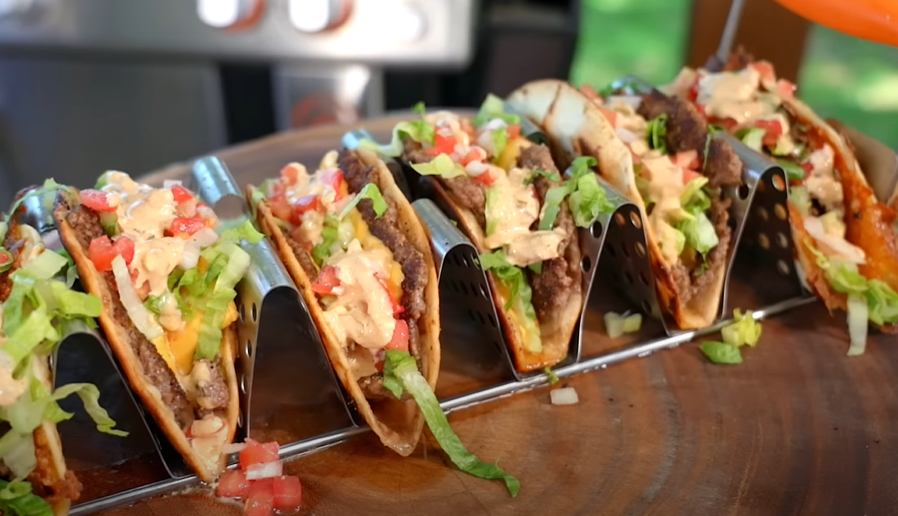

SmashBurger Taco
Homepage

Description
A smash burger taco consists of a crispy, thin, beautifully crusted
beef patty inside a golden tortilla with burger sauce, lettuce, and
pickles! They are juicy and absolutely delicious. A tortilla is place
on top of the meat and smashed on a hot griddle; very easy to make in
15 minutes.
Ingredients
- 1/4 cup mayonnaise
- 1 tablespoon ketchup
- 1 teaspoon mustard
- 1 tablespoon relish
- 1/2 teaspoon hot sauce
- 1 lb ground round
- 1 teaspoon Kosher salt
- 1/2 teaspoon freshly ground black pepper
- 4 (6-inch) flour tortillas
- 2 slices American cheese, cut in half lengthwise
- 1 cup shredded iceberg lettuce
- 1/4 cup diced onion
Steps
- Combine mayo, ketchup, mustard, relish, and hot sauce in a small bowl; set sauce aside.
- Heat a griddle over medium-high heat.
- Divide beef into 4 loose portions and place them in mounds on the hot griddle. Season evenly with salt and pepper and cook for 2 minutes. Place a tortilla on top of each beef portion and press down to flatten the beef into the shape and size of the tortilla.
- Cook until tortilla is golden-brown, 2 to 3 more minutes. Flip each patty over and top with cheese. When cheese has melted and the tortilla has lightly browned, top with lettuce and onions. Drizzle with sauce, remove from the griddle and fold in half like a taco. Serve immediately.